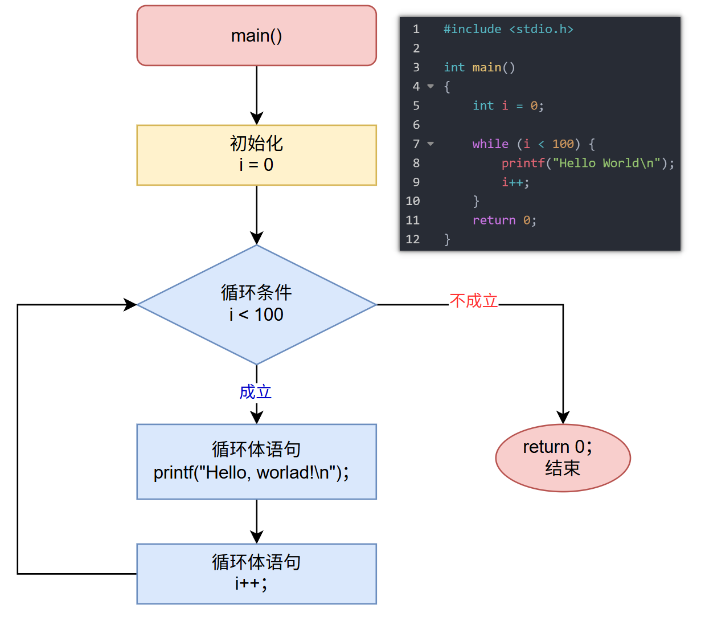

<!DOCTYPE lake>
<h1 data-lake-id="nZFkr" id="nZFkr"><span data-lake-id="u15020fd6" id="u15020fd6">0&gt; 功能需求</span></h1><p data-lake-id="uc1ad8461" id="uc1ad8461"><span data-lake-id="u917f7a5d" id="u917f7a5d">使用while语句，让计算机打印100遍"Hello World"</span></p><hr/><h1 data-lake-id="nEu6K" id="nEu6K"><span data-lake-id="u02c17cc9" id="u02c17cc9">1&gt; 程序设计</span></h1><span class="yuque-card-unsupported">[codeblock]</span><hr/><h1 data-lake-id="NwJuj" id="NwJuj"><span data-lake-id="u61d7d036" id="u61d7d036">2&gt; 语法基础</span></h1><span class="yuque-card-unsupported">[codeblock]</span><p data-lake-id="u66b47258" id="u66b47258"><span data-lake-id="u7b2f50f7" id="u7b2f50f7">执行流程图：</span></p><p data-lake-id="u52ce5140" id="u52ce5140"></p><p data-lake-id="u325a48cf" id="u325a48cf"><span class="lake-fontsize-14" data-lake-id="u3b91e9fc" id="u3b91e9fc">​</span><br/></p><p data-lake-id="u56b40a6d" id="u56b40a6d"><span class="lake-fontsize-14" data-lake-id="ud42fb59c" id="ud42fb59c">⚡</span><strong><span class="lake-fontsize-14" data-lake-id="uf8e51092" id="uf8e51092" style="color: #DF2A3F">与for循环比较， for循环更适合确定循环次数的情况, </span></strong></p><p data-lake-id="u3b91ee1c" id="u3b91ee1c"><strong><span class="lake-fontsize-14" data-lake-id="u9a7b6fc8" id="u9a7b6fc8" style="color: #DF2A3F"> 因为控制循环次数的变量写在一块，非常直观；</span></strong></p><p data-lake-id="ube3b8e59" id="ube3b8e59"><br/></p><h1 data-lake-id="gbRao" id="gbRao"><span data-lake-id="u259ce054" id="u259ce054">🐻</span><span data-lake-id="u56f8ce18" id="u56f8ce18">实践练习：</span></h1><p data-lake-id="uba0428cd" id="uba0428cd"><span data-lake-id="u6ca55b22" id="u6ca55b22">习题 1&gt; 编写程序打印10到1;</span></p><p data-lake-id="u8f6012d1" id="u8f6012d1"><span data-lake-id="ua65cf582" id="ua65cf582">习题 2&gt; 计算1到100的累加和（解题思路：大事化下，先打印出1~100， 再累加）;</span></p><hr/><h1 data-lake-id="YT5Aq" id="YT5Aq"><span data-lake-id="u896605b7" id="u896605b7">3&gt; 密码验证</span></h1><p data-lake-id="u5227f62b" id="u5227f62b"><span data-lake-id="uf425e466" id="uf425e466">功能需求：</span></p><p data-lake-id="ud4933e45" id="ud4933e45" style="text-indent: 2em"><span data-lake-id="ud525b138" id="ud525b138">开发一个极简的数字密码验证系统，用于验证用户输入的数字密码是否正确。</span></p><span class="yuque-card-unsupported">[codeblock]</span><p data-lake-id="ubc6696ec" id="ubc6696ec"><span data-lake-id="u1631b928" id="u1631b928">✨</span><span class="lake-fontsize-14" data-lake-id="u4c3210fb" id="u4c3210fb">while更适用，</span><span class="lake-fontsize-14" data-lake-id="u6ad5641a" id="u6ad5641a" style="color: #DF2A3F">结果已知，循环次数未知的循环</span><span class="lake-fontsize-14" data-lake-id="ud9688758" id="ud9688758">；</span></p><p data-lake-id="u8ed7dc1e" id="u8ed7dc1e"><span data-lake-id="u3d27dc86" id="u3d27dc86">❓</span><span class="lake-fontsize-14" data-lake-id="uac4c720e" id="uac4c720e">程序中写了2次printf("请输入密码："），如何改进？</span></p><hr/><h1 data-lake-id="byNK0" id="byNK0"><span data-lake-id="ub80a79e6" id="ub80a79e6">🐻</span><span data-lake-id="u2c351b22" id="u2c351b22">实践练习：</span></h1><p data-lake-id="u3241e20d" id="u3241e20d"><span data-lake-id="u65a168c9" id="u65a168c9">练习 1&gt; 分别计算100及以内所有奇数和偶数的和</span></p><p data-lake-id="u07c6365f" id="u07c6365f"><span data-lake-id="uc6857c95" id="uc6857c95">​</span><br/></p><p data-lake-id="udf3386df" id="udf3386df"><span data-lake-id="u0eabe7d0" id="u0eabe7d0">练习2&gt; 数字游戏</span></p><span class="yuque-card-unsupported">[codeblock]</span><hr/><h1 data-lake-id="ntUwS" id="ntUwS"><span data-lake-id="u7d4c55c1" id="u7d4c55c1">4&gt; 死循环</span></h1><span class="yuque-card-unsupported">[codeblock]</span><p data-lake-id="u01b891ea" id="u01b891ea"><code data-lake-id="u1559203e" id="u1559203e"><span class="lake-fontsize-14" data-lake-id="u2c594865" id="u2c594865">Ctrl + Shift +Esc</span></code><span class="lake-fontsize-14" data-lake-id="u19c6f0dc" id="u19c6f0dc"> 查看内存运行情况</span></p><hr/><h1 data-lake-id="O0Y06" id="O0Y06"><span data-lake-id="ud58444ab" id="ud58444ab">🐻</span><span data-lake-id="u260c712b" id="u260c712b">实践练习：</span></h1><p data-lake-id="u6c5ac262" id="u6c5ac262" style="text-indent: 2em"><span data-lake-id="ubbb89b21" id="ubbb89b21">简易计算器程序，使用while循环实现连续计算功能，支持基本的四则运算</span></p>